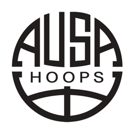

Summary
Founder-operator who builds and ships AI-enabled products end to end. Scaled a sports performance business from a single site to three facilities and over $1M in annual revenue through to acquisition, owning P&L, pricing, hiring and operations. Now I design and build agentic workflows, dashboards and customer-facing products across e-commerce, marketing and elite sport, taking ideas from discovery through delivery to measured adoption. Fluent in product discovery, data analytics and the modern build stack: Python, FastAPI, Next.js, Postgres and Claude.
Qualifications
University of Technology Sydney: Master of High Performance Sport (2025); Bachelor of Sport & Exercise Science, Honours (in progress)
University of New South Wales: Bachelor of Exercise Physiology (2020)
Accreditations: AES & AEP (ESSA), CSCS (NSCA), ASCA Strength & Conditioning Coach.
Experience
Subject:RAWSydneyJan 2026 – Present
Founder and Director
An agentic creative agency building custom software that automates creative production and client reporting.
- Founded and own the agency, set product direction, and built the internal tooling that lets a small team deliver work that would normally need a much larger studio.
- Designed and shipped Growth OS, a white-label demand-report engine that turns a clinic website and location into a credible one-page market report (FastAPI, Postgres, HTMX, Claude); owned it from discovery and PRD through deployment on Railway.
- Built an automated graphics and creative workflow through a custom app, cutting turnaround on repeatable design work and standardising brand output across clients.
- Built a retail sales-deck generator that converts raw notes into editable, on-brand PowerPoint decks with native charts (python-pptx, LibreOffice, Claude).
AIM (Always In Motion)Sydney / RemoteMay – Jul 2026
Operations Consultant
Operations and systems consulting for a direct-to-consumer eyewear brand on Shopify with third-party fulfilment.
- Migrated third-party logistics from a UK-only model to a split China and UK operation, reducing shipping cost and improving delivery times and returns for customers.
- Built a Live Ops dashboard and an agentic Slack alerting system (Next.js, FastAPI, Supabase, Railway) that surfaces order, fulfilment and stock issues before they cascade, with Claude-generated narrative briefings.
- Integrated Shopify and Mintsoft data into a single operational view so the team could monitor the health of the business in one place each day.

AUSA HoopsSydneySep 2020 – Mar 2026Head of Operations to Head of Performance
Australia's leading US-college basketball pathway. Grew from 1 to 3 facilities and 3 to 15+ staff; acquired in 2026.
- Owned the P&L for the performance business: set pricing, controlled budget, and made the hiring and staffing decisions that grew the team to 6 strength coaches and 5 physiotherapists.
- Founded and scaled the performance program from one site to three facilities, training 450+ athletes and reaching over $1M in annual revenue, contributing to the business being acquired in 2026.
- Serviced 40+ collegiate and professional athletes and ran international tours for 75+ athletes, owning logistics, staffing and budgets end to end.
- Named Employee of the Year (2022) for impact across performance, operations and athlete development.
 Penrith PanthersSydneyOct 2025 – Present
Penrith PanthersSydneyOct 2025 – PresentNRL Sports Scientist (internal data-product owner)
- Own the club's weekly performance reporting suite, building the GPS, wellness, screening and match-performance dashboards used daily by performance, medical and coaching staff.
- Build the data pipelines and reporting tools (R, Python, SQL, Claude Code) that turn raw monitoring data into the narratives that drive decisions.
 Athlete Empowerment InitiativeMiami / GlobalApr 2023 – Present
Athlete Empowerment InitiativeMiami / GlobalApr 2023 – PresentDirector (Board)
- Board director of a global non-profit improving basketball access in underserved communities; delivered camps, a court refurbishment and equipment donations across three countries.
Selected builds
Growth OS demand-report engine, AIM Live Ops platform, retail deck generator, and deidentified sport-monitoring dashboards. Full portfolio of agentic workflows and dashboards: udaybarooah.github.io/product
Skills
Product: Discovery, Jobs-to-Be-Done, PRDs and specs, roadmapping, experimentation, stakeholder management, post-launch adoption
Data & Analytics: R, Python, SQL, dashboard design, data pipelines, reporting automation
AI & Engineering: Claude and agentic workflows, FastAPI, Next.js / React, Postgres / Supabase, Railway, GitHub
Operations: P&L ownership, pricing, hiring, vendor and 3PL management, e-commerce ops (Shopify, Mintsoft)
References
Available on request.
 GWS Giants (AFL)
GWS Giants (AFL)